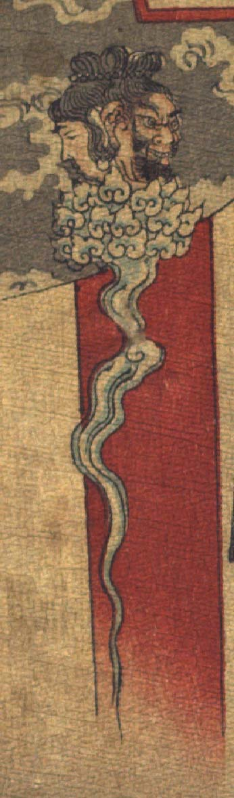

人頭杖。宙に浮いている。杖の柄に男と女の頭部が載っている。いずれも中国風の髪型をしており、男は頬とあごにひげを生やしている。女はうつむいている。男女の頭部の下に、渦巻く小雲が重なっているような飾りがつき、下に向って煙たなびくように伸びている。
著作者：John Little Archibald／出典：親書誌：U426_nichibunken_0122：The rat's plaint／日付：2006／資源識別子：U426_nichibunken_0122_0001_0003
Copyright (c)2010- International Research Center for Japanese Studies, Kyoto, Japan. All rights reserved.